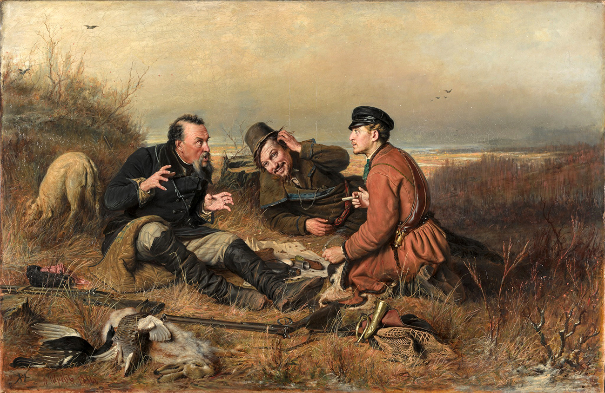
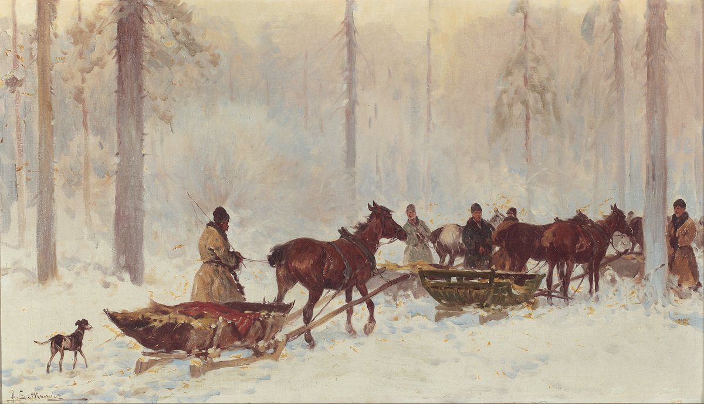

Hunting

In Anna Karenina, the motif of hunting refers to the action of hunting animals, or simply the broader situation of engaging in a hunt, with all its requisite actions. The main verb associated with this motif is, of course, “to hunt,” but in certain contexts other verbs can also represent the action, for example “to shoot,” when used in the context of felling an animal during a hunt.
Tolstoy’s approach to depicting hunting notably differs from his contemporaries. Tolstoy focuses chiefly on the effects of hunting on one’s internal world, whereas for his contemporaries such as Nekrasov or Turgenev, hunting was a pretense for characters to learn more about peasant life, a pattern most famous in Turgenev’s Notes of a Hunter, which covers a presumably wealthy narrator learning more about peasants. This tradition was popular amongst various authors however, as in Nekrasov’s poem “In the Village,” the narrator (presumably wealthy as his work requires literacy), is about to depart on a hunt the following morning before he hears two peasant women discussing the death of one of their sons who died during a bear hunt. Though Tolstoy’s hunts are recreational, Nekrasov shows that for peasants it is a matter of life and death, done out of necessity. Interestingly, hunting was such a typical pastime for wealthy Russians that these authors were able to use it as a mere pretense, often only briefly mentioned once—and yet, Tolstoy elected to flesh out this process not only once but in two multi-chapter scenes, not to mention the many smaller mentions of hunting, in order to endow a trite pastime with new literary meaning.
Interestingly, the objective of the hunt is not, at least for Tolstoy’s wealthy protagonists, to procure food. In fact, when describing the activities of Levin's party to his son, a peasant states that “the sportsmen were going to go to the marsh the next day and fire their guns” (Tolstoy 593). The wording is notable, as it demonstrates that whether they shoot their target or not is insignificant, for they are only there to entertain themselves. This is reinforced by Levin’s fury at not being left any of their packed food, despite his game back full of snipe (Tolstoy 598). But while hunting isn’t done for sustenance, it’s not simply entertainment either. To Tolstoy and most of his characters, hunting is a means to connect with nature, and their own lives. The hunt for Tolstoy is endowed with a particular quality, almost supernatural, in which the world of the hunt, be it forest or marsh, molds itself to mimic that of its characters. In fact, the hunt becomes prophetic, with the success or failure of two of the book’s key relationships (Levin and Kitty, Vronsky and Anna) foretold through the motif of hunting—specifically that of bears. As Saera Yoon notes, Levin’s relationship with Kitty is uniquely tracked and developed throughout his hunts, just before it develops in the story itself (Yoon 37). Kitty is early on associated with the name “little bear” by Levin. Later, while Levin and Stiva are on a hunt, Tolstoy emphasizes the presence of the great bear constellation in the sky above them just before Levin asks about Kitty, reinforcing the connection between the two. This is also when Levin learns that Kitty’s prospects with Vronsky have fallen through, enabling the possibility for his own relationship with her. Next, just two chapters before finally meeting Kitty again at Stiva’s dinner party where he would successfully propose to her, Levin is found having successfully hunted a she-bear, calling to mind the prior allusions and connections between Kitty and bears (Tolstoy 378). Thus hunting augurs success in Levin’s relationship with Kitty, comparing courtship to bear hunts, and tracking it throughout various smaller hunts. In fact, just as Levin’s life and attitude change to accommodate his new married life as he settles down with Kitty, so too does his hunting, as instead of hunting animals, he settles as a beekeeper (in Tolstoy’s words, “пчелиная охота,” or “bee hunting” (Tolstoy 855). Notably, bees produce honey, which is strongly associated with bears, especially in Russian where the word медведь literally means “honey-eater.” Thus, Levin’s active hunting represents his search for a wife, augured by his success in it, while his later sedentary hunting represents his settled life. By contrast, the failure of Vronsky’s relationship is also foretold through hunting and bear metaphors, albeit to a lesser extent. The prophetic nature of Vronsky and Anna’s dreams of peasants muttering in French is well-known, but Vronsky’s peasant notably comes from the bear hunt he had just conducted with a foreign prince, connecting this omen for their relationship to the hunt as well. Thus bears are connected more generally with romantic pursuits and relationships, as here the hunt obliquely augurs a failed relationship. Hunting also serves as a moralistic determiner. Levin, of course, is portrayed positively for his avid hunting. Tolstoy leverages the merchant Ryabinin’s inability to understand the pleasure of hunting to emphasize that he is not a true noble, as nobles are taught to hunt from a young age. A similar process occurs with Veslovsky, to whose many undesirable traits is added an ineptitude in the hunt. By contrast, someone like Oblonsky, despite being Levin’s opposite in politics, philosophy, morals, and lifestyle, is seemingly only connected to him through a shared love of hunting. While Stiva is remarked to be a poor estate owner and businessman, he is redeemed by his proficiency in and appreciation for hunting.

Works Cited
- Nekrasov, Nikolai. "In the Village." 1854.
- Tolstoy, Leo. Anna Karenina. Translated by Rosamund Bartlett, Oxford University Press, 2014.
- Turgenev, Ivan. Notes of a Hunter. Moscow University Printing House, 1852.
- Yoon, Saera. "Levin's hunting in Anna Karenina." The Explicator 81.2, 2023, pp. 37–40.